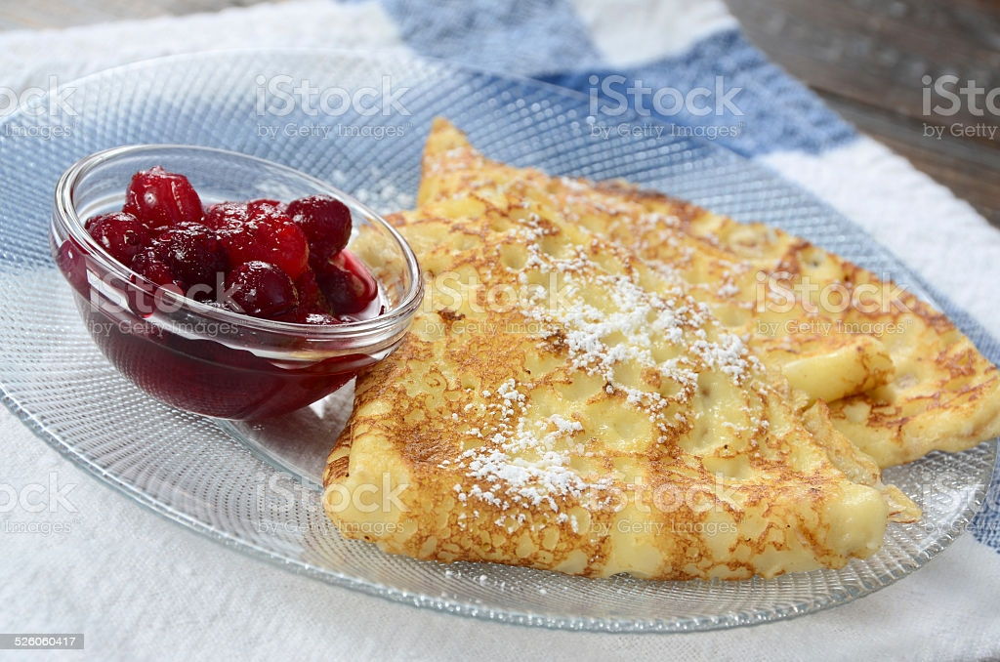

Swedish Pancakes

The Famous Swedish Pancakes Recipe
Are you a pancakes lover? So, this authentic Swedish recipe would make you crazy.
This is an authentic Swedish pancake recipe that was taught to me by my mother, who was born in Sweden. Kids will love it for sure and never will any leftovers. To serve, you can spoon melted butter over pancakes and sprinkle with sugar, or serve with blackberry jam.
Ingredients
- 3 eggs
- 1 1/4 cups milk
- 3/4 cup all-purpose flour
- 1 tablespoon with sugar
- 1/2 teaspoon salt
- 1 tablespoon butter, or as needed
Directions
- Beat eggs in a bowl with an electric mixer until thick and lemon-colored, 3 to 5 minutes. Stir in milk.
- Sift flour, sugar, and salt together in a bowl. Add to egg mixture; mix until batter is smooth.
- Grease a griddle with butter; heat over medium heat. Drop tablespoonfuls of batter on the griddle; spread to make thin pancakes. Cook until light brown on bottom, 1 to 2 minutes. Flip and continue cooking until second side is light brown, 1 to 2 minutes more. Repeat with remaining batter.